Puzzle Jar: 20 puzzle games in one free app
Puzzle Jar is a free iPhone and Android app with 20 shape-and-color puzzle games inside: you unscrew bolts, sort nuts and sweets, match buttons, untangle strings of lights, pop bubbles and more. Every game and every level plays offline, and you never need an account. We are Sultan of Niyyat, the small studio that made it; the app was called Route Duel before update 2.0.0 turned it into a collection.

| Price | Free to download, with optional in-app purchases |
|---|---|
| Games | 20 puzzle games in one app, all open from the first launch |
| Platforms | iPhone: iOS 15 or newer. Android: Android 7.0 or newer |
| Works offline | Yes, every game and level. Ads and purchases need internet |
| Ads | Full-screen ads between levels only, from the 3rd finished level, after a 5-second notice. No banners. Videos for extra help are your choice |
| Purchases | Remove Ads (one-time), and packs of hints, take backs and rescues. No coins |
| Account needed | No. Progress is saved on your phone |
| App size on iPhone | about 106 MB |
| Age rating | 4+ on the App Store, Everyone on Google Play |
| Language | English |
| Made by | Sultan of Niyyat |
The 20 games in the jar
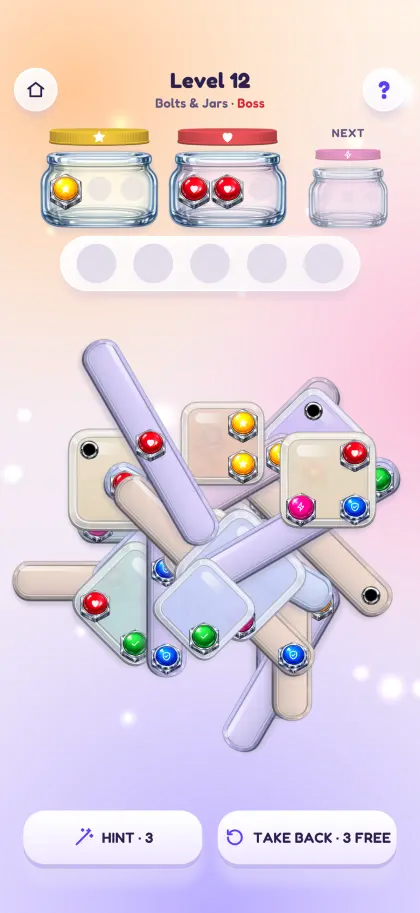
Bolts & JarsUnscrew bolts into color jars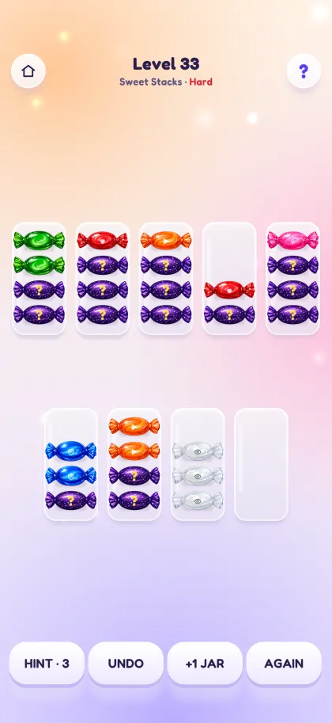
Sweet StacksSort sweets into jars by color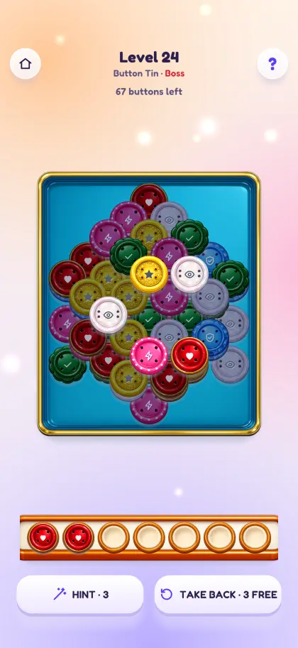
Button TinMatch three buttons from the tin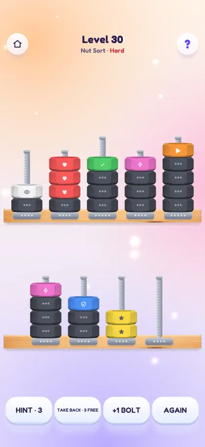
Nut SortSort colored nuts onto bolts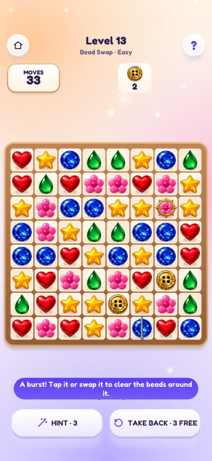
Bead SwapSwap beads to line up three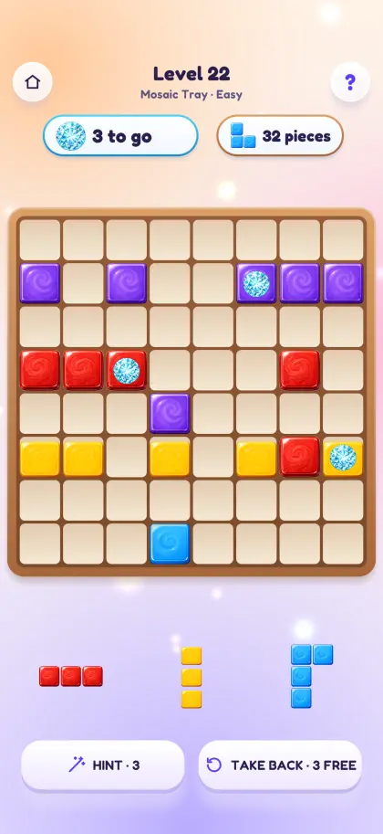
Mosaic TrayFill lines with tiles, free the jewels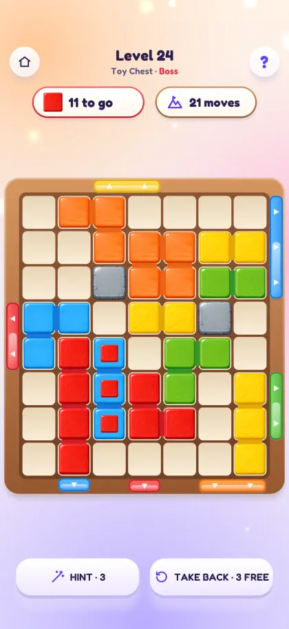
Toy ChestSlide blocks out through matching doors Hop OnWalk passengers to the bus of their color
Hop OnWalk passengers to the bus of their color Pencil CaseTap pencils out of the case, tips first
Pencil CaseTap pencils out of the case, tips first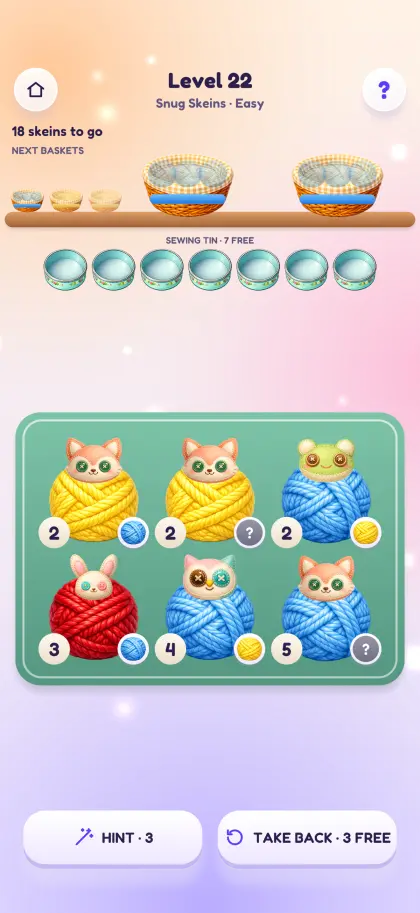
Snug SkeinsUnwind woolly toys into baskets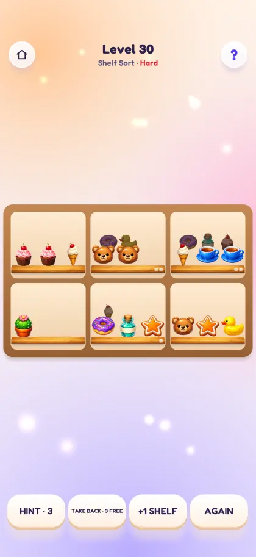
Shelf SortSort goods on shelves, three alike pop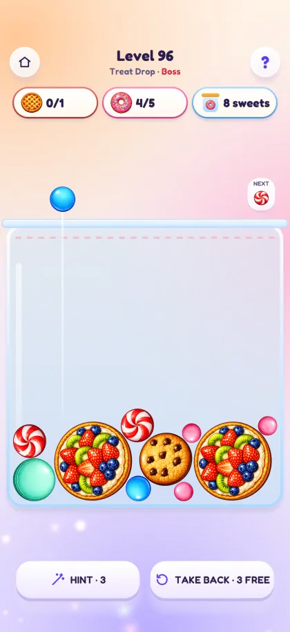
Treat DropDrop sweets, join two alike into bigger ones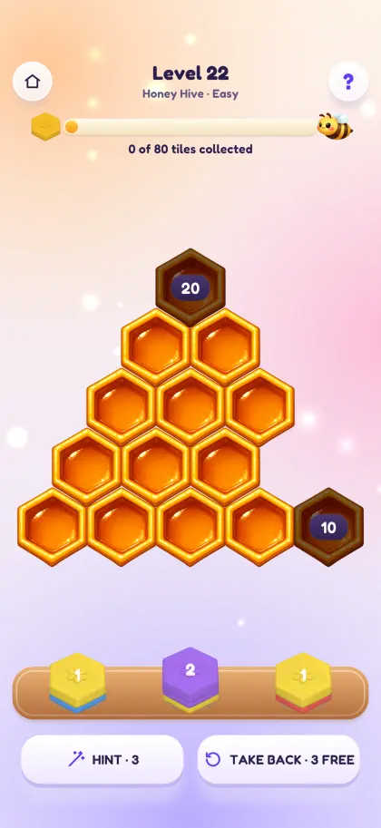
Honey HiveStack honey tiles, collect 10 of a color Fruit TumbleTap groups of fruit to pop them
Fruit TumbleTap groups of fruit to pop them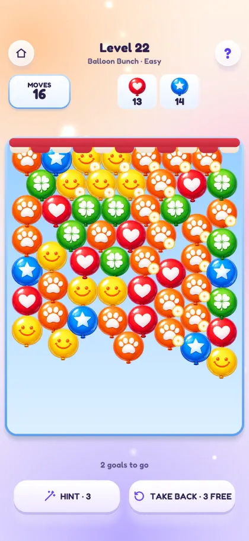
Balloon BunchPop bunches of floating balloons Tide PoolPop sea creatures before the tide rises
Tide PoolPop sea creatures before the tide rises Garland TangleUntangle the strings of lights
Garland TangleUntangle the strings of lights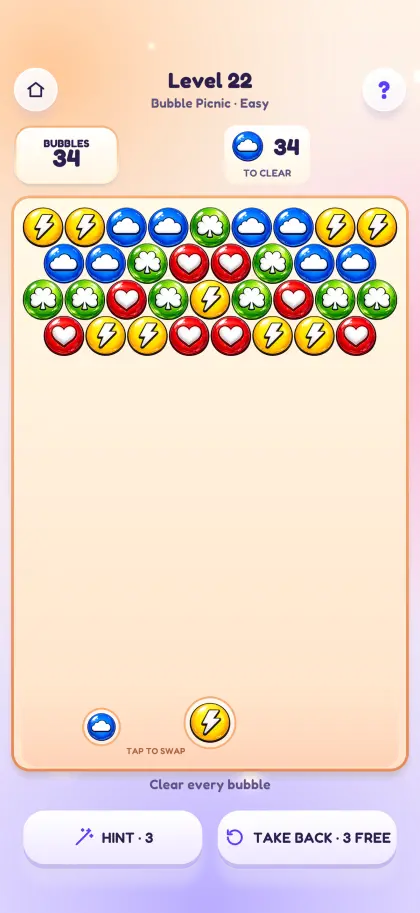
Bubble PicnicAim, shoot and pop the bubbles Quilt PinsOne pin in every patch, row and column
Quilt PinsOne pin in every patch, row and column Route DuelClear routes, beat the rival
Route DuelClear routes, beat the rival
What is Puzzle Jar?#
A collection of 20 small puzzle games that share one level count, one set of helpers and one jar. Each game has its own pieces and rules, from screws and nuts to beads, buses and bubbles, but they all work on shapes and colors rather than words or numbers. There is no clock in almost all of them, no lives and no waiting between levels. You can follow the level road through every game in turn or open any single game in Free play.
Which 20 games are in Puzzle Jar?#
These, in the order the level road visits them:
- Bolts & Jars: take screws out of stacked plates and fill jars by color.
- Sweet Stacks: move sweets between glass jars until each jar holds a single color.
- Button Tin: pick buttons off a pile and sew three of a kind together.
- Nut Sort: move painted nuts between bolts of different heights.
- Bead Swap: swap neighboring beads to make rows of three or more.
- Mosaic Tray: place tile pieces on an 8x8 tray and clear lines to free jewels.
- Toy Chest: slide blocks out through doors of their own color.
- Hop On: walk a crowd of passengers onto buses that match them.
- Pencil Case: tap pencils so they slide out, tip first, without bumping.
- Snug Skeins: unwind wool from felt toys into baskets.
- Shelf Sort: line up three matching goods on a shelf front.
- Treat Drop: drop sweets into a jar so two alike join into a bigger one.
- Honey Hive: stack hexagon honey tiles and collect ten of a color.
- Fruit Tumble: tap groups of touching fruit to pop them.
- Balloon Bunch: pop balloons that float upward and make fireworks.
- Tide Pool: clear sea creatures before new rows push up from below.
- Garland Tangle: move lanterns until no string of lights crosses another.
- Bubble Picnic: aim and shoot bubbles to pop groups of three.
- Quilt Pins: a logic grid with one pin in every patch, row and column.
- Route Duel: our original game, a turn-by-turn duel against a computer rival.
How is Puzzle Jar different from a one-game puzzle app?#
You get many genres in one download and one shared progress. A single screw or sort app gives you the same rule for hundreds of levels; here, three levels of one game are followed by three of another, so the puzzle changes before it gets old. Hints, take backs and rescues are shared by all 20 games, and so are the jar, the day streak and a Remove Ads purchase. One app also takes far less room on your phone than 20 separate ones.
How does the level road work?#
The road is one level number that runs through every game. You play three levels of a game, easy, then medium, then hard, and then the road moves to the next game; after the twentieth it starts again at the first, one step further on in each. Only levels won on the road move that number forward. Home shows your next road level and the six after it as small colored bubbles, so you always know which game is coming.
What is the jar in Puzzle Jar?#
A glass jar on Home that fills as you win. Every win, in any game, drops one piece into it in that game's color. Ten pieces fill it, and a full jar gives you one hint, one take back and one rescue, then empties so a fresh jar can start. Daily puzzles and Free play wins count too, so it fills however you like to play.
What is Free play?#
A row of cards on Home, one for each of the 20 games, all unlocked from the very first launch. Tap a card to play that game's next level, as many times as you want. Each game remembers its own level, so Free play moves that game forward, but it does not move the shared road number. Route Duel's card also holds Solo Run, the only timed mode in the app, which opens once you reach Route Duel's level 6.
What are today's puzzles?#
One extra puzzle per game, every day, shown under "Today's puzzles" on Home. They are separate from the normal levels: most games have 60 of them in each of three sets that take turns, so a daily does not come round again for about six months. Route Duel's daily is a picture board chosen by the date. Daily wins fill the jar and keep your streak going, but they do not change any game's own level.
How does the day streak work?#
It counts the days in a row on which you finished at least one level, in any of the 20 games. A day on which you won more than you lost is marked gold as a "winning day". If you miss a day after a streak of two days or more, you can save it by watching a short video that day or the next; after that it starts again from one.
Which Puzzle Jar game should I start with?#
Just tap Play: the road begins with Bolts & Jars, a screw puzzle with a guided first level that cannot be lost. If you already know what you like, go straight to that genre in Free play: Sweet Stacks or Nut Sort for sorting, Button Tin for tile matching, Bead Swap for match-3, Bubble Picnic for a bubble shooter. We put the two hardest games, Quilt Pins and Route Duel, at the end of the road on purpose.
How long does a level take?#
As long as you like in nearly every game, because there is no clock; you can put the phone down mid-level and come back. Early levels in each game are small and over quickly, while hard and boss levels ask for more planning. As one measured example, we built Honey Hive levels to last about two minutes. The single exception is Route Duel's Solo Run, a race against a clock of at least two minutes.
Does Puzzle Jar have a story or characters?#
No. There are no characters to follow, no dialogue and no house to decorate between levels. Each game is a plain puzzle made of shapes and colors: screws, sweets, buttons, beads, lanterns, sea creatures. The only opponent anywhere is Route Duel's computer rival, which plays routes against you on a board and has no story behind it.
Do I need to read or do math to play Puzzle Jar?#
No. While you play, everything is shown by color, shape and position, and each color also wears its own small symbol. Each game opens with a short rules card in simple English, and you can read it again from the "?" button, but you do not need it to tap and try. There are no number puzzles, no word games and no card games in the collection.
Can I play only the games I like?#
Yes. Free play lets you stay in one game, or a few, for as long as you want, and those wins still fill the jar and count toward your streak. The road number only moves when you play road levels, so it simply waits for you. Many players use the road for variety and Free play for a favorite.
Is Puzzle Jar a new game?#
It is a new name for an app that first came out on iPhone on October 19, 2026 as Route Duel, a single puzzle duel. Update 2.0.0 in November 2026 renamed it Puzzle Jar on the same App Store and Google Play pages and added more games; later updates grew it to 20. Players who already had Route Duel kept their levels and purchases, and Route Duel is still inside as the last game on the road.
Questions people ask
- Is Puzzle Jar free? Ads, purchases and prices (32 questions)
- Playing Puzzle Jar offline, with no wifi (26 questions)
- Stuck on a level: hints, take backs, rescues and difficulty (28 questions)
- Kids, families, safety and privacy (26 questions)
- Help: phones, progress, settings and support (29 questions)
- The best puzzle games for your situation (41 questions)
- Games like the puzzle games you already play (30 questions)
- Puzzle game types explained (32 questions)